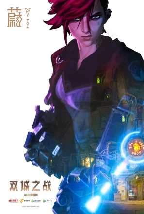
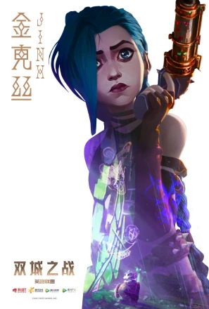
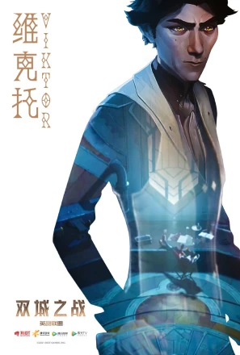
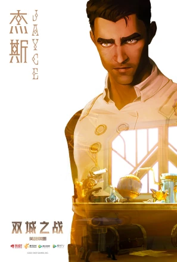
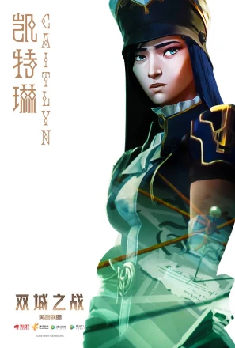
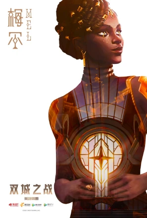
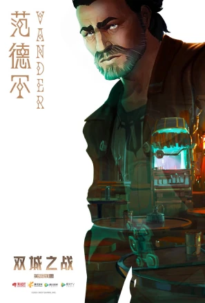
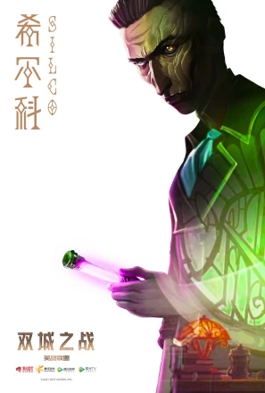

| 首页 | 背景 | 人物 | 故事 | 音乐 |
|---|
|  | 蔚被塑造成一个勇敢无畏、正义感十足的少女形象。她拥有强大的力量和敏锐的直觉，在战斗中总是冲锋在前，成为不可或缺的先锋。蔚与爱人凯特琳共同承担着守护皮尔沃特城的责任，两人性格互补，并肩作战，相互支持，形成了坚不可摧的伙伴关系。随着动画第二季的展开，观众将更深入地了解到蔚的成长历程、性格变化以及她与凯特琳之间深厚的感情。同时，新一季的动画也将揭示蔚在面对困境时的抉择与蜕变，令人期待她未来的故事发展。 |
|---|---|
|  | 金克丝，蔚的妹妹，自儿时就是蔚的跟屁虫。在范德尔领导底城人冲击皮城失败后，金克丝随蔚一起生活在范德尔的酒馆里，平常经常捣鼓一些小发明，但是因此闯下了不小祸（包括故事开篇炸毁了杰斯的实验室）。后来在范德尔被宿敌希尔科囚禁时，蔚出于安全性考虑拒绝金克丝参与营救，然而金克丝带着自以为能够帮上忙的海克斯土炸弹跟了上去。就在蔚等人即将被希尔科的改造人击杀时，金克丝为了救蔚扔出自制的海克斯土炸弹，引发了剧烈爆炸。最终导致范德尔以及另外两个参与营救的小伙伴死亡。幸存下来的蔚因为金克丝误杀队友这件事大吵一架，而希尔科则恰巧介入，将金克丝拉拢到了自己的阵营。 |
|  | 出身祖安的天才发明家和科学家，杰斯的挚友，机械先驱，有着卓越的科技才能和为底城人民造福的执着追求。 |
|  | 杰斯被称为皮尔特沃夫的未来守护者。
他原本是个发明家，如今则是一名政治领袖。他在海克斯科技的发明中起到了至关重要的作用——一种使用科学手段对奥术能量加以利用的技术。 |
|  | 凯特琳个性顽强，意志坚定。
家人眼中的她是一个不肖女，而她始终都在努力摆脱家人的掌控。其实她仍然爱着家人，但她憎恨自己与生俱来的特权。她认为财富不过是一个囚笼。 |
|  | 梅尔出身于符文之地最有权势的家族之一，却在小时候被逐出家门。
她在皮尔特沃夫找到了容身之处，喜欢杰斯，甚至成为城市领袖。她的成功引来了家族的注意，但这究竟是福是祸，犹未可知。
梅尔母亲是诺克萨斯的将军铁血狼母安蓓萨，她有一个哥哥，但不知道什么原因已经遇害了！ |
|  | 他是祖安黑巷的头子，以及蔚和金克丝的养父。他以好家长的形象深入人心，严格却不苛刻，慈爱却不溺爱，与孩子们建立了紧密的关系。在剧情中，范德尔为保护女儿蔚而喝下生化药剂，失去理智后的他可能被炼金术士辛吉德改造为游戏《英雄联盟》中的祖安怒兽——沃里克（狼人）。 |
|  | 希尔科，祖安冷酷无情的黑势力教父，以微光药剂统治底城，也是金克丝的养父，视金克丝为唯一挚爱，极端抗争皮城压迫，一生为祖安而战。曾经是底城黑势力教父范德尔的得力助手，范德尔死后统治底城，使用微光药剂对底城人进行双重统治，收养爆爆并培养为自己的得力武器，后将其视为女儿，取名金克丝，非常信任她，最后死于金克丝枪下。 |